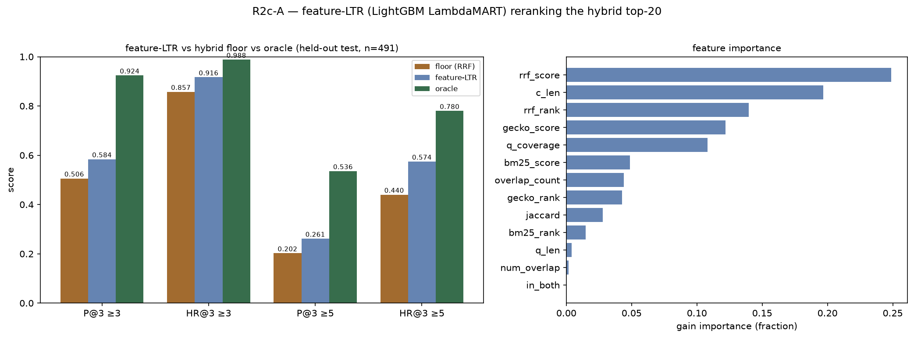
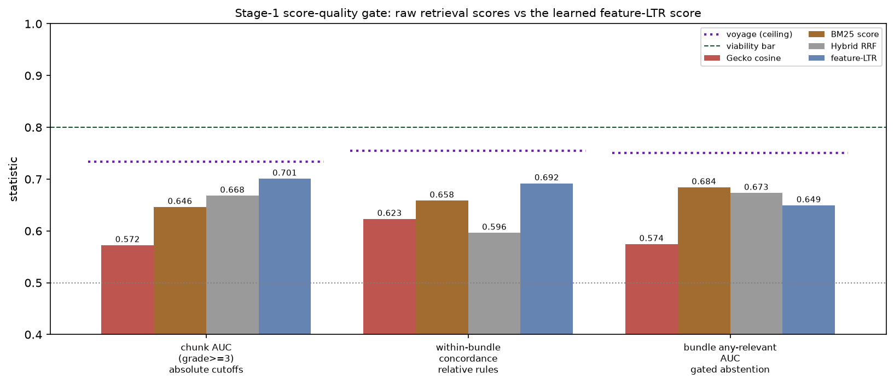

2026-06-13 · config-v0.2.0 · branch feat/r2-retriever-upgrade-20260613 ·
Option A of the R2c reranker work (lit review)
The cheapest, guaranteed-deployable reranker — a LightGBM LambdaMART over signals
we already compute, no neural net, no conversion gate — is a real but
partial win. On held-out test it beats the hybrid (RRF) floor on every
metric: P@3 0.506 → 0.584 (lenient) and 0.202 → 0.261 (strict), HR@3 0.857 → 0.917
and 0.440 → 0.574 — capturing ~18% of the oracle P@3 headroom (and ~40% of the
hit-rate headroom). Its learned score is also the most thresholdable signal
measured so far (chunk-AUC 0.701 vs the hybrid's 0.668), though still below the
0.80 viability bar. It is not just a learned RRF: the text-derived features the
RRF formula can't use (chunk length, query coverage, term overlap) carry ~38% of
the gain. This sets the bar a neural cross-encoder must beat to justify its
(unproven) on-device conversion.
Setup
Model: LightGBM LambdaMART (lambdarank, nDCG@3 early-stop) over 13 cheap
features of each (query, chunk) in the hybrid (Gecko+BM25 RRF, α=0.5/k=60)
top-20 — retrieval scores/ranks (gecko, bm25, RRF), and lexical overlap (chunk &
query length, shared-term count, Jaccard, query coverage, numeric/dose overlap).
Trained on the frozen train split, early-stopped on
dev, reported on the held-out test split only
(491 queries; 70/15/15 by-query, stratified on hybrid-top-20 strict presence).
Deterministic (fixed seed, no subsampling). Floor = RRF order (the R2a hybrid —
recommended but not yet deployed; the live system is Gecko-only); oracle =
reorder by judge grade (the R2b ceiling), both recomputed on the same test
queries for apples-to-apples.
Results

Left: feature-LTR vs hybrid floor vs oracle on the held-out test
queries. Right: gain-importance of each feature.
Metric
floor (RRF)
feature-LTR
oracle
headroom captured
P@3 ≥3
0.506
0.584
0.924
~19%
HR@3 ≥3
0.857
0.917
0.988
~46%
P@3 ≥5
0.202
0.261
0.536
~18%
HR@3 ≥5
0.440
0.574
0.780
~39%
Readings
A real, consistent lift over the hybrid — biggest on hit rate.
Every metric improves; the largest gains are HR@3 (strict +13.4 pp, lenient
+6.0 pp) — feature-LTR pulls a relevant chunk into the top-3 for many more
queries. P@3 gains are smaller (+7.8 / +5.9 pp).
But far from the oracle. It captures only ~18–19% of the
P@3 headroom (more of the HR headroom). A reranker that reads the text
should do better — which is exactly what the neural candidates and the
Qwen3-8B reference will test.
Not just a learned RRF — the lexical bet partly paid off.
Gain importance: rrf_score 0.25, c_len 0.20, rrf_rank 0.14,
gecko_score 0.12, q_coverage 0.11, then bm25/overlap/jaccard.
The fusion signals (~39%) matter most, but chunk length and query-coverage
together carry ~30% — lexical features the RRF formula can't use are a real
part of the gain, which is why it beats the fixed fusion.
Its learned score is the most thresholdable yet —
still sub-viable. chunk-AUC 0.701 and concordance 0.692 top every
raw retrieval score; all three stay under 0.80. Detail in the next
section.
Does feature-LTR revive thresholding?
The R1 Stage-1 gate, run on the learned LTR score and compared against the raw
retrieval scores from R2a (prior bars sourced from the committed R2a gate;
feature-LTR on the held-out test pool — populations differ slightly, the
ordering is robust):

The three Stage-1 statistics across Gecko cosine, BM25, hybrid RRF
and the learned feature-LTR score. Dotted gray = chance (0.5); dashed green =
0.80 viability bar; purple dotted = voyage ceiling (full-set).
Statistic (rule it gates)
Gecko
BM25
Hybrid RRF
feature-LTR
chunk AUC ≥3 (absolute cutoffs)
0.572
0.646
0.668
0.701
within-bundle concordance (relative rules)
0.623
0.658
0.596
0.692
bundle any-relevant AUC (gated abstention)
0.574
0.684
0.673
0.649
The learned score is the most thresholdable on two of three —
because it's trained for relevance. chunk-AUC 0.701 and concordance
0.692 both top every raw retrieval score: a score optimized to predict the
grade aligns with relevance better than cosine, BM25, or RRF. This is the
closest anything has come to the 0.80 bar.
But it loses on bundle-AUC (0.649 vs BM25's 0.684). The
gated-abstention signal ("is the whole bundle junk?") is still best served by
BM25's raw lexical score — the LTR optimizes within-query ordering, not the
absolute "does this query have anything" question.
Still no revival — all three under 0.80. R1's
verdict holds, now by the smallest margin yet. The genuinely thresholdable
score would be a trained cross-encoder's (Option B) — feature-LTR shows the
direction (learning helps) without clearing the bar.
Decision
Feature-LTR is a viable backup that actually helps. It is
deployable on-device with zero conversion risk and beats the hybrid on every
metric — so even if no cross-encoder converts (Phase 0), we have a real
improvement to ship (pending the end-to-end gate).
It sets the bar. A neural cross-encoder must beat
P@3 0.584 / HR@3-strict 0.574 by enough to justify the on-device conversion
effort. The Qwen3-8B reference and oracle bracket how much more is reachable
(oracle P@3 0.924) — the gap is large, so there is real room for a
text-reading reranker to win.
Carry the lexical signal forward. c_len and q_coverage
mattering confirms cheap lexical features add value beyond fusion — useful
whether or not a neural model is adopted.
Scope: offline only, on the held-out test split. "Deployable backup" still has to
clear the end-to-end gate (M1 MCQ ±RAG rerun, SAQ A/B) before shipping, and the
on-device feature pipeline must reproduce these features faithfully (BM25 via
FTS5; watch the x86-vs-ARM float drift seen in R1). The strong-reference
comparison (Qwen3-8B, bge-v2-m3) is Option B (cluster) — this run anchors floor →
feature-LTR → oracle and builds the split + feature + scoring harness B reuses.